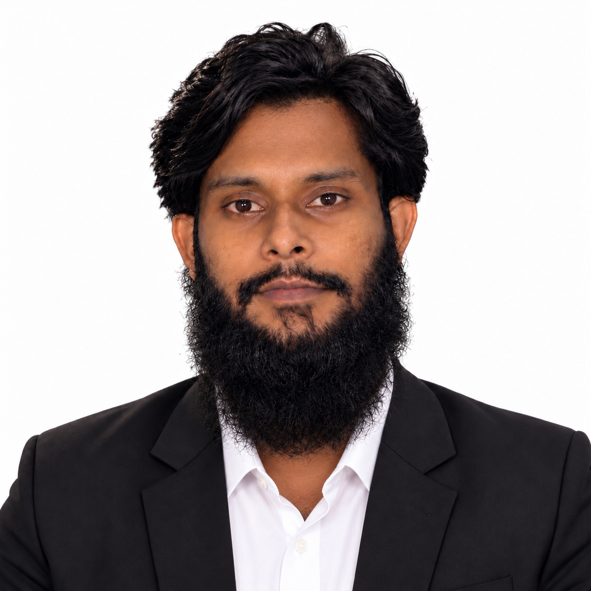

Open to civil, site and project engineer roles in Bangladesh
Soeb Aftab
Civil engineer in Dhaka. I set out layouts, check levels, take BOQ quantities and settle clashes on site, from PWD government buildings to a G+1 RCC duplex.

Site experience, December 2022 to February 2026
- 21 months, solid line
- Junior Project Engineer, three PWD buildings in Dhaka
- 11 months, solid line
- Site Engineer on a G+1 RCC duplex in Tangail
- 13 months, dashed line
- Part-time business development at Orbit Education
About
I finished my B.Sc. in Civil Engineering at the University of Asia Pacific in 2022 and started on site that December. For 21 months I worked on three Public Works Department buildings in Dhaka: marking layouts, checking levels, taking BOQ quantities and settling clashes with the main civil contractor.
In 2025 I took on a separate job, supervising a G+1 RCC duplex in Tangail from foundation to finishing. Next to it I worked part-time in business development, which taught me to follow up with clients and keep people informed.
I work from approved drawings, BNBC and BOQ quantities, and I keep records that someone else can check: level sheets, measurements, variance notes and handover logs.
Experience
Junior Project Engineer
The company held the electrical and allied works packages on three PWD building projects, and other contractors did the main civil work. I was the civil engineer on that scope.
- Marked layouts and set out openings, risers and cable routes, then checked floor levels floor by floor against approved drawings.
- Worked with the main civil contractor and MEP teams to settle clashes before execution, and confirmed each room was ready before area-wise handover.
- Prepared BOQ quantities for civil support items, noted where the site differed from the drawings, and kept signed level check sheets and handover records.
Site Engineer, independent / contractual
- Supervised the work from foundation to superstructure (columns, beams, slabs, staircase) and finishing on a 1,742 sq ft plot, following the structural drawings. Built-up area: 2,200 sq ft.
- Checked shuttering, bar diameter, spacing, lap length and clear cover before every casting. Watched concrete mix proportions, workability and curing, and brick masonry and mortar mixing.
- Worked out reinforcement quantities from the structural drawings, measured completed work, kept item-wise material and labour records, and checked contractor payments against site measurements.
- Followed BNBC Part 5 (Building Materials) and Part 7 (Construction Practices and Safety).
Business Development Manager, part-time
Onboarded clients, researched the market, coordinated programs and kept stakeholders updated.
Projects
Bangladesh NGO Foundation Office
Opening layouts, level checks and handover records for LT cable distribution, control panels and AC rising cables. Closed service route clashes with the main civil contractor.
NINS Hospital Expansion
Checked plinth levels and equipment layout marks, and closed clashes in MDB and FDB rooms, machinery areas and feeder routes.
Parliament Bhaban North Plaza Conversion
Checked service route marks, riser point levels and room readiness for the office conversion works.
G+1 RCC duplex
Full site supervision, from reinforcement checks before casting to contractor payments worked out from measured work. The project portfolio shows how each check and record was handled.
Research and tools
A machine learning framework (Random Forest, Gradient Boosting, LSTM and SHAP) to forecast 7- and 14-day weather-driven delay risk on construction sites in Bangladesh, using rainfall, river-level and site progress data. It is a concept paper with no results yet.
A spreadsheet for designing reinforced concrete pile caps with the AASHTO ASD method. Co-authored with Toukir Ahmmed Tusher and supervised by Dr. Md. Abdur Rouf.
Rainfall vs site progress dashboard
Compares monthly rainfall with planned and actual progress, to show how weather moves a construction schedule.
Skills and credentials
- Site work
- Layout and setting out, level control, site surveying, RCC casting and curing checks, brick masonry and finishing
- Checks and records
- Reinforcement and shuttering checks, approved drawing verification, material checks, level sheets, handover logs
- Quantities
- BOQ quantity takeoff, reinforcement quantities, measurement records, billing verification, variance notes
- Coordination
- Civil–MEP interface coordination, clash resolution with main civil contractors
- Software and codes
- AutoCAD, MS Excel (dashboards and data visualization), ETABS (academic level), MS Word, MS PowerPoint. BNBC Parts 5 and 7.
University of Asia Pacific (UAP), Dhaka. 2018 to 2022
Institution of Engineers, Bangladesh. No. A25692, 2022
UniAthena, December 2023
University of Asia Pacific
Contact
For civil, site and project engineer roles in Bangladesh, email me or message me on LinkedIn. My CV is a two-page PDF.
engr.soebaftab@gmail.com +880 1636 598428